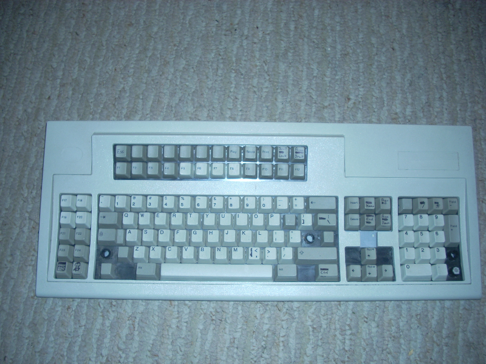
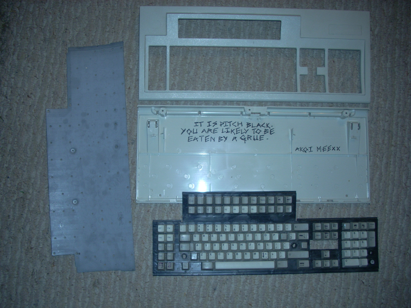

 So a friend was cleaning out the basement of his house, and ran across what we thought were two IBM Model F Terminal keyboards. Since he wasn't tech-inclined, he kept the better of the two and sold it off, giving me the other one that someone had previously mangled in an unfinished conversion project. I hopped on the IRC channel to talk with people who know a good deal more about identifying the keyboards than myself (Thanks again Compgeke!), and found out what I had was actually a Model M.
 I love the heft and weight of the keyboard, and since it's already been partially modified (the underlying key plane has been hacked up and melted together to change the 'plus' arrow key placement to 'inverse t', and tabs were cut on the top cover to presumably add Context/OS keys) I'd like to refurbish it with a new keyswitch setup (the electronics inside were -gone-). Here's what I have to work with from the original board:
I'm currently debating using Cherry MX Blue switches for most of the keys, as I want the audible and tactile feedback they provide; but I don't know how well they would fit and have been trying fruitlessly to get a hold of someone at Cherry corp for a single sample request each of Blue and Green MX's (green for the spacebar, I feel would work well). I will be writing my own firmware to an Atmel chip as opposed to a Teensy (I don't like to waste a development board on something that will be basically permanent).
I'll keep this thread updated as a build log for the project and will post any new developments as they happen. When the source for the keyboard firmware and driver is finished I will post that as well. In the meanwhile, anyone know of a company or individual that I can request a couple sample switches from? Any suggestions or critiques on this conversion would be most appreciated as well.